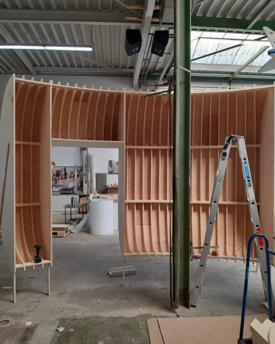

Over ons
Geen showroom. Een werkplaats.
Yaro is gevestigd aan de Zonnebaan in Utrecht, op bedrijventerrein Lage Weide. Ontwerp en bouw gebeuren onder één dak.
"Alles wordt gemaakt in onze werkplaats waar we beschikken over een mooi machinepark."
WerkplaatsZonnebaan 6, Lage Weide
OntwerpNaar uw ontwerp, of samen bedacht
ZakelijkInterieur, winkel, beurs en event
Welke ruimte wilt u laten passen?
Vertel wat u zoekt. Een schets, maten of foto's helpen.